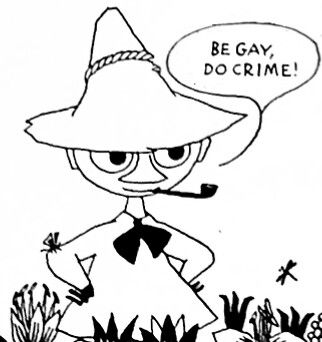

About Snufkin
Snufkin is the epitome of a seemingly peaceful queer anarchist.
Edited drawing of Snufkin saying "Be gay, do crime"
Characteristics
- He's a wanderer
- He despises authority
- He loves his friends but is ultimately an introvert and needs time alone
- He is Little My's half-brother
Friends
Snufkin is generally friendly with everyone in Moominvalley, but his best friend is without a doubt Moomintroll. Click on the links to read more about them.